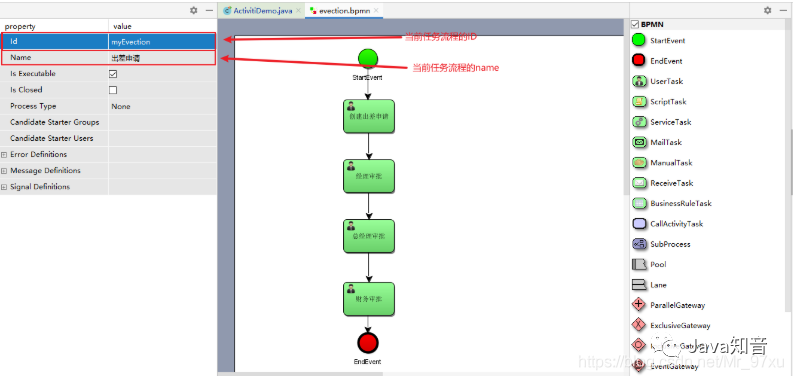
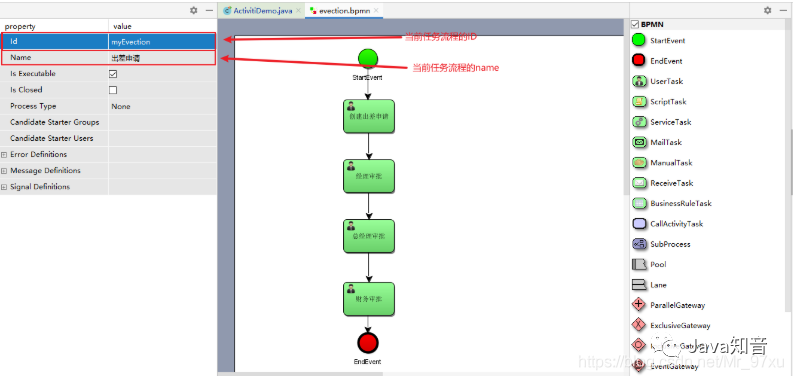
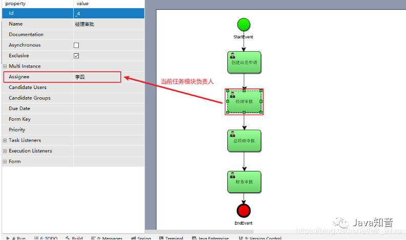
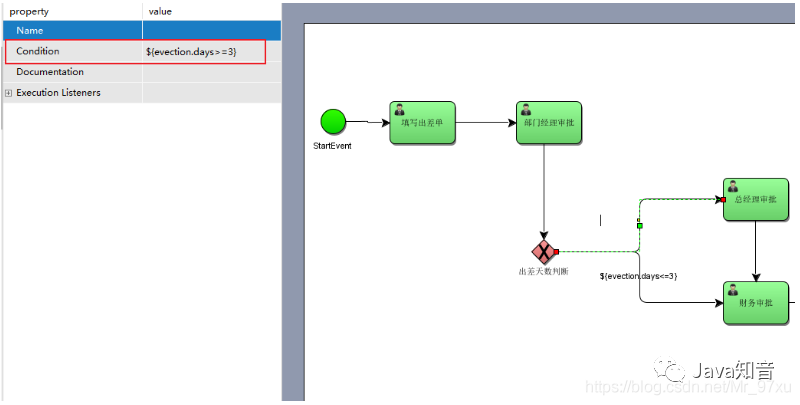

概念
工作流。通过计算机对业务流程自动化执行管理，主要解决的是“使在多个参与者之间按照某种预定义的规则自动进行传递文档、信息或任务的过程，从而实现某个预期的业务目标，或者促使此目标的实现”。
Activiti7
介绍
Activiti是一个工作流引擎，Activiti可以将业务系统中复杂的业务流程抽取出来，使用专门的建模语言BPMN2.0进行定义，业务流程按照预先定义的流程进行执行，实现了系统的流程由Activiti进行管理，减少业务系统由于流程变更进行系统升级改造的工作量，从而提高系统的健壮性，同时也减少了系统开发维护成本。
在使用activiti之前，首先需要编写activiti.cfg.xml配置文件。并且引入相关依赖。
<dependencies>
<!--activiti的核心包-->
<dependency>
<groupId>org.activiti</groupId>
<artifactId>activiti-engine</artifactId>
<version>6.0.0</version>
</dependency>
<dependency>
<groupId>org.activiti</groupId>
<artifactId>activiti-spring</artifactId>
<version>6.0.0</version>
</dependency>
<dependency>
<groupId>org.activiti</groupId>
<artifactId>activiti-bpmn-model</artifactId>
<version>6.0.0</version>
</dependency>
<dependency>
<groupId>javax.servlet</groupId>
<artifactId>servlet-api</artifactId>
<version>2.5</version>
</dependency>
<dependency>
<groupId>org.activiti</groupId>
<artifactId>activiti-bpmn-converter</artifactId>
<version>6.0.0</version>
</dependency>
<dependency>
<groupId>org.activiti</groupId>
<artifactId>activiti-json-converter</artifactId>
<version>6.0.0</version>
</dependency>
<dependency>
<groupId>org.activiti</groupId>
<artifactId>activiti-bpmn-layout</artifactId>
<version>6.0.0</version>
</dependency>
<dependency>
<groupId>org.activiti.cloud</groupId>
<artifactId>activiti-cloud-services-api</artifactId>
<version>7-201710-EA</version>
</dependency>
<dependency>
<groupId>aspectj</groupId>
<artifactId>aspectjweaver</artifactId>
<version>1.5.4</version>
</dependency>
<dependency>
<groupId>mysql</groupId>
<artifactId>mysql-connector-java</artifactId>
<version>5.1.40</version>
</dependency>
<dependency>
<groupId>org.springframework</groupId>
<artifactId>spring-test</artifactId>
<version>5.0.7.RELEASE</version>
</dependency>
<dependency>
<groupId>org.springframework</groupId>
<artifactId>spring-core</artifactId>
<version>4.1.6.RELEASE</version>
</dependency>
<dependency>
<groupId>org.mybatis</groupId>
<artifactId>mybatis</artifactId>
<version>3.4.5</version>
</dependency>
<dependency>
<groupId>commons-dbcp</groupId>
<artifactId>commons-dbcp</artifactId>
<version>1.4</version>
</dependency>
<dependency>
<groupId>junit</groupId>
<artifactId>junit</artifactId>
<version>4.12</version>
</dependency>
<dependency>
<groupId>log4j</groupId>
<artifactId>log4j</artifactId>
<version>1.2.17</version>
</dependency>
<dependency>
<groupId>org.slf4j</groupId>
<artifactId>slf4j-log4j12</artifactId>
<version>1.7.21</version>
</dependency>
<dependency>
<groupId>org.slf4j</groupId>
<artifactId>slf4j-api</artifactId>
<version>1.7.25</version>
</dependency>
<dependency>
<groupId>commons-io</groupId>
<artifactId>commons-io</artifactId>
<version>2.6</version>
</dependency>
<dependency>
<groupId>org.projectlombok</groupId>
<artifactId>lombok</artifactId>
<version>1.16.18</version>
<scope>provided</scope>
</dependency>
</dependencies>
|
activiti.cfg.xml
activiti的引擎配置文件，包括：ProcessEngineConfiguration的定义、数据源定义、事务管理器等。其实就是一个Spring配置文件。
<?xml version="1.0" encoding="UTF-8"?>
<beans xmlns="http://www.springframework.org/schema/beans"
xmlns:xsi="http://www.w3.org/2001/XMLSchema-instance"
xsi:schemaLocation="http://www.springframework.org/schema/beans
http://www.springframework.org/schema/beans/spring-beans.xsd">
<!--dbcp连接池-->
<bean id="dataSource" class="org.apache.commons.dbcp.BasicDataSource">
<property name="driverClassName" value="com.mysql.jdbc.Driver"/>
<property name="url" value="jdbc:mysql://localhost:3306/activiti"/>
<property name="username" value="root"/>
<property name="password" value="root"/>
<property name="maxActive" value="3"/>
<property name="maxIdle" value="1"/>
</bean>
<!--在默认方式下,bean的id固定为processEngineConfiguration-->
<bean id="processEngineConfiguration" class="org.activiti.engine.impl.cfg.StandaloneProcessEngineConfiguration">
<!--配置数据库相关信息-->
<property name="dataSource" ref="dataSource"/>
<!--
activiti数据库表处理策略
false(默认值)：检查数据库的版本和依赖库的版本，如果不匹配就抛出异常
true：构建流程引擎时，执行检查，如果需要就执行更新。如果表不存在，就创建。
create-drop：构建流程引擎时创建数据库报表，关闭流程引擎时就删除这些表。
drop-create：先删除表再创建表。
create：构建流程引擎时创建数据库表，关闭流程引擎时不删除这些表
-->
<property name="databaseSchemaUpdate" value="true"/>
<property name="asyncExecutorActivate" value="false"/>
<property name="mailServerHost" value="mail.my-corp.com"/>
<property name="mailServerPort" value="5025"/>
</bean>
</beans>
|
Activiti流程框架，在前期主要需要了解的就是数据库表的创建、流程的部署、流程的启动和各个阶段任务的完成。
流程引擎配置类
流程引擎配置类（ProcessEngineConfiguration），通过 ProcessEngineConfiguration可以创建工作流引擎 ProceccEngine。
工作流引擎的创建
工作流引擎的创建主要有两种方式：默认创建方式和一般创建方式
默认创建方式
ProcessEngine processEngine = ProcessEngines.getDefaultProcessEngine();
System.out.println(processEngine);
|
一般创建方式
//使用自定义方式创建
ProcessEngineConfiguration processEngineConfiguration = ProcessEngineConfiguration.createProcessEngineConfigurationFromResource("activiti.cfg.xml");
//获取流程引擎对象:通过 ProcessEngineConfiguration 创建 ProcessEngine,此时会创建数据库
ProcessEngine processEngine = processEngineConfiguration.buildProcessEngine();
|
当创建好工作流引擎后，对应的数据库中会自动生成25张数据库表。
ACT_GE_PROPERTY中会先展示下一次流程的ID（next.dbid），并且在下一次流程部署的时候，对下一次流程的ID进行赋值。
Activiti表说明
这里以表名的前缀进行说明：
Service服务接口
Activiti中还有许多的Service服务接口。这些Service 是工作流引擎提供用于进行工作流部署、执行、管理的服务接口，我们可以使用这些接口操作服务对应的数据表。扩展：最全的java面试题库
Service创建方式
通过ProcessEngine创建Service方式：
Runtimeservice runtimeService = processEngine.getRuntimeService();
RepositoryService repositoryService = processEngine.getRepositoryService();
TaskService taskService = processEngine.getTaskService();
|
Service总览
Activiti 的资源管理类，提供了管理和控制流程发布包和流程定义的操作。使用工作流建模工具设计的业务流程图需要使用此service将流程定义文件的内容部署到计算机。除了部署流程定义以外，还可以查询引擎中的发布包和流程定义。
暂停或激活发布包，对应全部和特定流程定义。暂停意味着它们不能再执行任何操作了，激活是对应的反向操作。获得多种资源，像是包含在发布包里的文件，或引擎自动生成的流程图。获得流程定义的pojo版本，可以用来通过java解析流程，而不必通过xml。
Activiti的流程运行管理类。可以从这个服务类中获取很多关于流程执行相关的信息
Activiti的任务管理类。可以从这个类中获取任务的信息。
Activiti的历史管理类，可以查询历史信息，执行流程时，引擎会保存很多数据（根据配置)，比如流程实例启动时间，任务的参与者，完成任务的时间，每个流程实例的执行路径，等等。这个服务主要通过查询功能来获得这些数据。
Activiti的引擎管理类，提供了对Activiti流程引擎的管理和维护功能，这些功能不在工作流驱动的应用程序中使用，主要用于Activiti 系统的日常维护。
流程图符号说明

BPMN插件
使用IDEA进行开发，建议下载一个插件。actiBPM插件，直接搜索下载。
流程符号、画流程图
流程符号：事件Event，活动Activity，网关Gateway，流向
使用流程设计器画出流程图
- 创建bpmn文件，在流程设计器使用流程符号来表达流程，指定流程的key，指定任务负责人
- 生成png文件
- 创建的bpmn文件要放在resourse下的bpmn文件夹下。
 

注意： 当前任务流程的ID不能是数字开头。

找到本地的文件，选择notepad打开
<?xml version="1.0" encoding="UTF-8" standalone="yes"?>
<definitions xmlns="http://www.omg.org/spec/BPMN/20100524/MODEL" xmlns:activiti="http://activiti.org/bpmn" xmlns:bpmndi="http://www.omg.org/spec/BPMN/20100524/DI" xmlns:omgdc="http://www.omg.org/spec/DD/20100524/DC" xmlns:omgdi="http://www.omg.org/spec/DD/20100524/DI" xmlns:tns="http://www.activiti.org/test" xmlns:xsd="http://www.w3.org/2001/XMLSchema" xmlns:xsi="http://www.w3.org/2001/XMLSchema-instance" expressionLanguage="http://www.w3.org/1999/XPath" id="m1611283406582" name="" targetNamespace="http://www.activiti.org/test" typeLanguage="http://www.w3.org/2001/XMLSchema">
<process id="myEvection" isClosed="false" isExecutable="true" name="出差申请" processType="None">
<startEvent id="_2" name="StartEvent"/>
<userTask activiti:assignee="zhangsan" activiti:exclusive="true" id="_3" name="创建出差申请"/>
<userTask activiti:assignee="jerry" activiti:exclusive="true" id="_4" name="经理审批"/>
<userTask activiti:assignee="jack" activiti:exclusive="true" id="_5" name="总经理审批"/>
<userTask activiti:assignee="rose" activiti:exclusive="true" id="_6" name="财务审批"/>
<endEvent id="_7" name="EndEvent"/>
<sequenceFlow id="_8" sourceRef="_2" targetRef="_3"/>
<sequenceFlow id="_9" sourceRef="_3" targetRef="_4"/>
<sequenceFlow id="_10" sourceRef="_4" targetRef="_5"/>
<sequenceFlow id="_11" sourceRef="_5" targetRef="_6"/>
<sequenceFlow id="_12" sourceRef="_6" targetRef="_7"/>
</process>
<bpmndi:BPMNDiagram documentation="background=#FFFFFF;count=1;horizontalcount=1;orientation=0;width=842.4;height=1195.2;imageableWidth=832.4;imageableHeight=1185.2;imageableX=5.0;imageableY=5.0" id="Diagram-_1" name="New Diagram">
<bpmndi:BPMNPlane bpmnElement="myEvection">
<bpmndi:BPMNShape bpmnElement="_2" id="Shape-_2">
<omgdc:Bounds height="32.0" width="32.0" x="185.0" y="0.0"/>
<bpmndi:BPMNLabel>
<omgdc:Bounds height="32.0" width="32.0" x="0.0" y="0.0"/>
</bpmndi:BPMNLabel>
</bpmndi:BPMNShape>
<bpmndi:BPMNShape bpmnElement="_3" id="Shape-_3">
<omgdc:Bounds height="55.0" width="85.0" x="160.0" y="85.0"/>
<bpmndi:BPMNLabel>
<omgdc:Bounds height="55.0" width="85.0" x="0.0" y="0.0"/>
</bpmndi:BPMNLabel>
</bpmndi:BPMNShape>
<bpmndi:BPMNShape bpmnElement="_4" id="Shape-_4">
<omgdc:Bounds height="55.0" width="85.0" x="160.0" y="185.0"/>
<bpmndi:BPMNLabel>
<omgdc:Bounds height="55.0" width="85.0" x="0.0" y="0.0"/>
</bpmndi:BPMNLabel>
</bpmndi:BPMNShape>
<bpmndi:BPMNShape bpmnElement="_5" id="Shape-_5">
<omgdc:Bounds height="55.0" width="85.0" x="160.0" y="285.0"/>
<bpmndi:BPMNLabel>
<omgdc:Bounds height="55.0" width="85.0" x="0.0" y="0.0"/>
</bpmndi:BPMNLabel>
</bpmndi:BPMNShape>
<bpmndi:BPMNShape bpmnElement="_6" id="Shape-_6">
<omgdc:Bounds height="55.0" width="85.0" x="160.0" y="390.0"/>
<bpmndi:BPMNLabel>
<omgdc:Bounds height="55.0" width="85.0" x="0.0" y="0.0"/>
</bpmndi:BPMNLabel>
</bpmndi:BPMNShape>
<bpmndi:BPMNShape bpmnElement="_7" id="Shape-_7">
<omgdc:Bounds height="32.0" width="32.0" x="185.0" y="475.0"/>
<bpmndi:BPMNLabel>
<omgdc:Bounds height="32.0" width="32.0" x="0.0" y="0.0"/>
</bpmndi:BPMNLabel>
</bpmndi:BPMNShape>
<bpmndi:BPMNEdge bpmnElement="_12" id="BPMNEdge__12" sourceElement="_6" targetElement="_7">
<omgdi:waypoint x="201.0" y="445.0"/>
<omgdi:waypoint x="201.0" y="475.0"/>
<bpmndi:BPMNLabel>
<omgdc:Bounds height="0.0" width="0.0" x="0.0" y="0.0"/>
</bpmndi:BPMNLabel>
</bpmndi:BPMNEdge>
<bpmndi:BPMNEdge bpmnElement="_8" id="BPMNEdge__8" sourceElement="_2" targetElement="_3">
<omgdi:waypoint x="201.0" y="32.0"/>
<omgdi:waypoint x="201.0" y="85.0"/>
<bpmndi:BPMNLabel>
<omgdc:Bounds height="0.0" width="0.0" x="0.0" y="0.0"/>
</bpmndi:BPMNLabel>
</bpmndi:BPMNEdge>
<bpmndi:BPMNEdge bpmnElement="_9" id="BPMNEdge__9" sourceElement="_3" targetElement="_4">
<omgdi:waypoint x="202.5" y="140.0"/>
<omgdi:waypoint x="202.5" y="185.0"/>
<bpmndi:BPMNLabel>
<omgdc:Bounds height="0.0" width="0.0" x="0.0" y="0.0"/>
</bpmndi:BPMNLabel>
</bpmndi:BPMNEdge>
<bpmndi:BPMNEdge bpmnElement="_11" id="BPMNEdge__11" sourceElement="_5" targetElement="_6">
<omgdi:waypoint x="202.5" y="340.0"/>
<omgdi:waypoint x="202.5" y="390.0"/>
<bpmndi:BPMNLabel>
<omgdc:Bounds height="0.0" width="0.0" x="0.0" y="0.0"/>
</bpmndi:BPMNLabel>
</bpmndi:BPMNEdge>
<bpmndi:BPMNEdge bpmnElement="_10" id="BPMNEdge__10" sourceElement="_4" targetElement="_5">
<omgdi:waypoint x="202.5" y="240.0"/>
<omgdi:waypoint x="202.5" y="285.0"/>
<bpmndi:BPMNLabel>
<omgdc:Bounds height="0.0" width="0.0" x="0.0" y="0.0"/>
</bpmndi:BPMNLabel>
</bpmndi:BPMNEdge>
</bpmndi:BPMNPlane>
</bpmndi:BPMNDiagram>
</definitions>
|
流程的操作
部署流程
使用 Activiti 提供的 API 把流程图的内容写入到数据库中
属于资源操作类，使用 RepositoryService
- 单文件部署：把bpmn文件和png文件逐个处理
- 压缩包部署：把bpmn文件和png文件打成压缩包来处理
- 部署操作表：
act_re_deployment、act_re_procdef、act_ge_bytearray
/**
* 流程部署
*/
public void deployment() {
// 创建 ProcessEngine
ProcessEngine processEngine = ProcessEngines.getDefaultProcessEngine();
// 获取 RepositoryService
RepositoryService repositoryService = processEngine.getRepositoryService();
// 使用 service 进行流程的部署,定义一个流程的名字,把bpmn和png部署到数据中
Deployment deployment = repositoryService.createDeployment()
.name("出差申请流程") //流程图标的名字
.addClasspathResource("bpmn/evection.bpmn") //bpmn文件
.addClasspathResource("bpmn/evection.png") //bpmn文件生成的图片
.deploy();
// 输出部署信息
System.out.println("流程部署ID:" + deployment.getId());
System.out.println("流程部署名字:" + deployment.getName());
}
|
有时候我们会有多个流程，需要创建多个bpmn流程文件，这个时候想要同时部署，我们可以对bpmn文件进行打包压缩，使用Zip包进行批量的部署
/**
* 使用Zip包进行批量的部署
*/
@Test
public void deployProcessByZip() {
// 获取流程引擎
ProcessEngine processEngine = ProcessEngines.getDefaultProcessEngine();
// 获取 RepositoryService
RepositoryService repositoryService = processEngine.getRepositoryService();
// 流程部署
// 读取资源包文件，构造成 InputStream
InputStream inputStream = this.getClass().getClassLoader().getResourceAsStream("bpmn/evection.zip");
// 使用 InputStream 构造 ZipInputStream
ZipInputStream zipInputStream = new ZipInputStream(inputStream);
// 使用压缩包的流，进行流程的部署
Deployment deploy = repositoryService.createDeployment()
.addZipInputStream(zipInputStream)
.deploy();
// 输出
System.out.println("流程部署的ID：" + deploy.getId());
System.out.println("流程部署的名称：" + deploy.getName());
}
|
操作的数据库表：
- act_ge_bytearray
- act_ge_property
- act_re_deployment
- act_re_procdef
启动流程实例
流程部署完成以后，需要启动流程实例。使用 RuntimeService 根据流程定义的 key进行启动。
核心代码：
/**
* 启动流程
*/
public void starProcess() {
// 创建 ProcessEngine
ProcessEngine processEngine = ProcessEngines.getDefaultProcessEngine();
// 获取 RunTimeService
RuntimeService runtimeService = processEngine.getRuntimeService();
// 根据流程定义的ID启动流程
ProcessInstance instance = runtimeService.startProcessInstanceByKey("myEvection");
// 输出内容
System.out.println("流程定义ID:" + instance.getProcessDefinitionId());
System.out.println("流程实例的ID:" + instance.getId());
System.out.println("当前活动的ID:" + instance.getActivityId());
}
|
任务查询
使用 TaskService ，根据流程定义的 key ，任务负责人来进行查询
核心代码：
/**
* 查询个人待执行的任务
*/
@Test
public void findPersonalTaskList() {
// 获取流程引擎
ProcessEngine processEngine = ProcessEngines.getDefaultProcessEngine();
// 获取TaskService
TaskService taskService = processEngine.getTaskService();
// 根据流程的key和任务的负责人去查询任务
List<Task> taskList = taskService.createTaskQuery()
.processDefinitionKey("myEvection") // 流程的key
.includeProcessVariables()
.taskAssignee("zhangsan") // 要查询的负责人
.list();
// 输出
for (Task task : taskList) {
System.out.println("流程实例的ID：" + task.getProcessInstanceId());
System.out.println("任务的ID：" + task.getId());
System.out.println("任务的负责人：" + task.getAssignee());
System.out.println("任务的名称：" + task.getName());
}
}
|
任务完成
使用 TaskService ，用任务 ID 直接完成任务。
核心代码：
/**
* 完成个人任务
*/
@Test
public void completTask() {
String key = "testCandidiate";
String assignee = "张三1"; //任务的负责人
ProcessEngine processEngine = ProcessEngines.getDefaultProcessEngine();
TaskService taskService = processEngine.getTaskService();
Task task = taskService.createTaskQuery()
.processDefinitionKey(key)
.taskAssignee(assignee)
.singleResult();
if (task != null) {
taskService.complete(task.getId());
}
}
|
关于流程实例的挂起和激活
全部流程实例的挂起和激活
/**
* 全部流程实例的挂起和激活
*/
@Test
public void suspendAllProcessInstance() {
// 1.获取流程引擎
ProcessEngine processEngine = ProcessEngines.getDefaultProcessEngine();
// 2.获取 RepositoryService
RepositoryService repositoryService = processEngine.getRepositoryService();
// 3.查询流程定义
ProcessDefinition processDefinition = repositoryService.createProcessDefinitionQuery()
.processDefinitionKey("myEvection")
.singleResult();
// 4.获取当前流程定义的实例是否都是挂起状态
boolean flag = processDefinition.isSuspended();
// 5.获取流程定义的ID
String id = processDefinition.getId();
// 6.判断是否挂起状态。是:改为激活;否:改为挂起
if (flag) {
// 改为激活. 参数1:流程定义的ID,参数2:是否激活,参数3:激活时间
repositoryService.activateProcessDefinitionById(id, true, null);
System.out.println("流程定义ID：" + id + "已激活");
} else {
// 改为挂起. 参数1:流程定义的ID;参数2:是否挂起;参数3:挂起时间
repositoryService.suspendProcessDefinitionById(id, true, null);
System.out.println("流程定义ID：" + id + "已挂起");
}
}
|
单个流程实例的挂起和激活
/**
* 单个流程实例的挂起和激活
*/
@Test
public void suspendSingleProcessInstance() {
// 1.获取流程引擎
ProcessEngine processEngine = ProcessEngines.getDefaultProcessEngine();
// 2.获取 RuntimeService
RuntimeService runtimeService = processEngine.getRuntimeService();
// 3.通过 RuntimeService 获取流程实例对象
ProcessInstance instance = runtimeService.createProcessInstanceQuery()
.processInstanceId("17501")
.singleResult();
// 4.得到当前流程实例的暂停状态
boolean flag = instance.isSuspended();
// 5.获取流程实例的ID
String instanceId = instance.getId();
// 6.判断是否暂停。是:改为激活;否:改为暂停
if (flag) {
runtimeService.activateProcessInstanceById(instanceId);
System.out.println("流程实例ID：" + instanceId + "已激活");
} else {
runtimeService.suspendProcessInstanceById(instanceId);
System.out.println("流程实例ID：" + instanceId + "已暂停");
}
}
|
注意： 流程实例在挂起的状态下是无法进行下一步操作的。扩展：最全的java面试题库
流程变量
我们在使用流程变量的时候。如果我们将一个对象存储到一个流程变量中，那么这个对象需要实现Serializable接口。
/**
* 出差申请中的流程变量对象
*/
@NoArgsConstructor
@AllArgsConstructor
@Data
public class Evection implements Serializable {
private Long id; //主键ID
private Integer days; //出差天数
private String evectionName; //出差单名字
private Date startTime; //出差开始时间
private Date endTime; //出差结束时间
private String address; //目的地
private String reason; //出差原因
}
|
流程变量的作用域
- 整个流程实例、任务、执行实例。
- 默认：整个流程实例。
使用方法
在属性上使用UEL表达式 ${assignee}，assignee就是一个流程变量的名称。
在连线上使用UEL表达式 ${days<=3}，days就是一个流程变量名称，返回结果为true或者false。

Activiti有很多种方式设置流程变量，这里简单介绍两种：
启动流程时设置流程变量
/**
* 启动流程
*/
@Test
public void startProcess() {
ProcessEngine processEngine = ProcessEngines.getDefaultProcessEngine();
RuntimeService runtimeService = processEngine.getRuntimeService();
// 流程变量map
Map<String, Object> map = new HashMap<>();
// 设置流程变量
Evection evection = new Evection();
evection.setDays(2);
// 把流程变量的pojo放入map
map.put("evection", evection);
map.put("assignee0", "张三");
map.put("assignee1", "李经理");
map.put("assignee2", "王财务");
map.put("assignee3", "赵总经理");
runtimeService.startProcessInstanceByKey("myProcess_1", map);
}
|
任务办理时设置
/**
* 完成任务
*/
@Test
public void completTask() {
ProcessEngine processEngine = ProcessEngines.getDefaultProcessEngine();
TaskService taskService = processEngine.getTaskService();
Evection evection = new Evection();
evection.setDays(2);
Map<String, Object> map = new HashMap<>();
map.put("evection", evection);
Task task = taskService.createTaskQuery()
.processDefinitionKey("myProcess_2")
.taskAssignee("王财务0")
.singleResult();
if (task != null) {
String taskId = task.getId();
// 完成任务
taskService.complete(taskId, map);
}
}
|
网关
用来控制流程的走向
排他网关——ExclusiveGateway
用来在流程中实现决策，当流程执行到这个网关，所有的分支都会判断条件是否为true，如果为true，则执行该分支。
注意： 排他网关只会选择一个作为true的分支执行，如果有两个分支都为true，排他网关会选择ID值比较小的一条分支去执行。
如果从排他网关出去的流程所有的条件都不满足，则会抛出异常。扩展：最全的java面试题库
并行网关——ParallelGateway
并行网关，允许流程分成多条分支，也可以把多分支汇聚到一起，并行网关的功能是基于进入和外出顺序流的：
- fork分支：并行后的所有外出顺序流，为每个顺序流都创建一个并发分支
- join汇聚：所有到达并行网关，在此等待的分支，直到所有进入顺序流的分支都到达以后，流程就会通过汇聚网关。
注意： 如果同一个并行网关有多个进入和多个外出顺序流，它就同时具有分支和汇聚功能，这时，网关会先汇聚所有进入的顺序流，然后再切分成多个并行分支。
与其他网关的主要区别是：并行网关不会解析条件，即使顺序流中定义了条件，也会被忽略。
并行网关需要所有分支的全部运行完了，才会汇聚，继续向下执行。
包含网关——InclusiveGateway
包含网关可以看成是排他网关和并行网关的结合体，和排他网关一样，可以在外出顺序流上定义条件，包含网关会解析它们，但是主要的区别是：包含网关可以选择多于一条顺序流，这和并行网关一样。
包含网关的功能是基于进入和外出顺序流的。
- 分支：所有外出顺序流的条件都会被解析，结果为true的顺序流会以并行方式继续执行，会为每一个顺序流创建一个分支。
- 汇聚：所有并行分支到达包含网关，会进入等待状态，直到每个包含流程token的进入顺序流的分支都到达。这是和并行网关最大的不同。
事件网关——EventGateway
Activiti和Spring的整合开发
配置文件：
<?xml version="1.0" encoding="UTF-8"?>
<beans xmlns="http://www.springframework.org/schema/beans"
xmlns:xsi="http://www.w3.org/2001/XMLSchema-instance"
xmlns:tx="http://www.springframework.org/schema/tx"
xsi:schemaLocation="http://www.springframework.org/schema/beans
http://www.springframework.org/schema/beans/spring-beans-4.3.xsd
http://www.springframework.org/schema/tx
http://www.springframework.org/schema/tx/spring-tx.xsd">
<!--工作流引擎配置对象-->
<bean id="processEngineConfiguration" class="org.activiti.spring.SpringProcessEngineConfiguration">
<!--数据源-->
<property name="dataSource" ref="dataSource"/>
<!--使用Spring的事务管理器-->
<property name="transactionManager" ref="transactionManager"/>
<!--
数据库策略:
false:默认值。activiti在启动时，会对比数据库表中保存的版本。如果没有表或者版本不匹配，将抛出 异常。
true:activiti会对数据库中所有表进行更新操作，如果表不存在，则会自动创建。
create_drop:在activiti启动时创建表，在关闭时删除表（必须手动关闭引擎，才能删除表）。
drop-create:在activiti启动时删除原来的旧表，然后再创建新表（不需要手动关闭引擎）。
-->
<property name="databaseSchemaUpdate" value="true"/>
</bean>
<!--配置数据源-->
<bean id="dataSource" class="org.apache.commons.dbcp.BasicDataSource">
<property name="driverClassName" value="com.mysql.jdbc.Driver"/>
<property name="url" value="jdbc:mysql://localhost:3306/actspring"/>
<property name="username" value="root"/>
<property name="password" value="root"/>
<property name="maxActive" value="3"/>
<property name="maxIdle" value="1"/>
</bean>
<!-- 流程引擎对象 -->
<bean id="processEngine" class="org.activiti.spring.ProcessEngineFactoryBean">
<property name="processEngineConfiguration" ref="processEngineConfiguration"/>
</bean>
<!--资源服务-->
<bean id="repositoryService" factory-bean="processEngine" factory-method="getRepositoryService"/>
<!--流程管理-->
<bean id="runtimeService" factory-bean="processEngine" factory-method="getRuntimeService"/>
<!--任务管理-->
<bean id="taskService" factory-bean="processEngine" factory-method="getTaskService"/>
<!--历史管理-->
<bean id="historyService" factory-bean="processEngine" factory-method="getHistoryService"/>
<!--事务管理器-->
<bean id="transactionManager" class="org.springframework.jdbc.datasource.DataSourceTransactionManager">
<property name="dataSource" ref="dataSource"/>
</bean>
<!--通知-->
<tx:advice id="txAdvice" transaction-manager="transactionManager">
<tx:attributes>
<!--传播行为-->
<tx:method name="save*" propagation="REQUIRED"/>
<tx:method name="insert*" propagation="REQUIRED"/>
<tx:method name="delete*" propagation="REQUIRED"/>
<tx:method name="update*" propagation="REQUIRED"/>
<tx:method name="find*" propagation="SUPPORTS" read-only="true"/>
<tx:method name="get*" propagation="SUPPORTS" read-only="true"/>
</tx:attributes>
</tx:advice>
</beans>
|
Activiti和SpringBoot的整合开发
配置文件：
spring:
application:
name: actspringboot
datasource:
driver-class-name: com.mysql.jdbc.Driver
url: jdbc:mysql://localhost:3306/actspring?useUnicode=true&characterEncoding=utf-8&useSSL=false&autoReconnect=true&serverTimezone=UTC
username: root
password: root
activiti:
# false:默认值。activiti在启动时，会对比数据库表中保存的版本。如果没有表或者版本不匹配，将抛出异常
# true:activiti会对数据库中所有表进行更新操作，如果表不存在，则会自动创建
# create_drop:在activiti启动时创建表，在关闭时删除表（必须手动关闭引擎，才能删除表）
# drop-create:在activiti启动时删除原来的旧表，然后再创建新表（不需要手动关闭引擎）
# 线上一般使用false,开发中使用true
database-schema-update: true
# 自动部署验证设置:true-开启（默认）、false-关闭
check-process-definitions: false
# 开启历史表
db-history-used: true
# 历史记录存储等级
history-level: full
server:
port: 8082
|

 wechat
wechat alipay
alipay